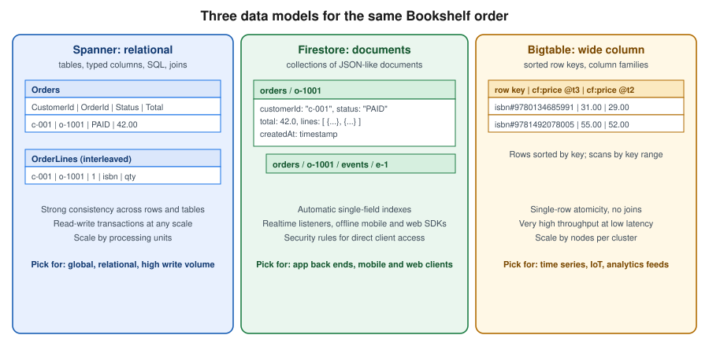
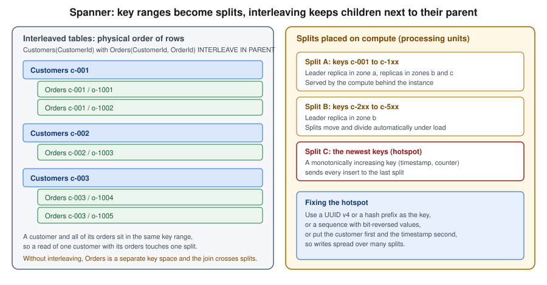

Spanner, Firestore and Bigtable
|
This content was generated with the assistance of AI and should be verified against the official documentation before being relied on in production. |
Commands and behaviour below are current for the gcloud CLI 586 line, the Google Cloud Client Libraries for Java (through
the libraries-bom) and Spring Cloud GCP 8.x (Spring Boot 4) or 7.4.x (Spring Boot 3), checked 2026-10-01 against the
Spanner, Firestore and Bigtable documentation. Spanner editions went generally available on 2024-09-24, Firestore gained
editions and MongoDB compatibility (GA 2025-08-26) and Bigtable gained GoogleSQL support, so confirm flags with
gcloud spanner instances create --help, gcloud firestore databases create --help and gcloud bigtable instances create
--help before relying on them in automation. The project my-project-id and the region us-central1 are placeholders.
Google Cloud has three databases that exist only on Google Cloud and that scale horizontally without you running servers:
Spanner, a relational database with strongly consistent transactions that can span regions; Firestore, a serverless
document database with real-time listeners and direct access from mobile and web clients; and Bigtable, a wide-column
store for very high throughput on sorted keys. They are different answers to different questions, so this page describes
each, then ends with a comparison and a rule of thumb for choosing. In the Bookshelf scenario the relational catalog lives in
Cloud SQL (see Cloud SQL) and the orders data is a document workload (see
MongoDB on Google Cloud for the MongoDB-compatible variant). This page uses the same
Bookshelf domain to show where each of the three would fit: Spanner if orders must be relational and globally consistent,
Firestore for per-user data read straight from the browser, and Bigtable for a high-volume price-history or click stream.
The map of every Google Cloud database is in Managed Databases on Google Cloud; the engine-neutral
guidance on when a key-value, document or relational model fits is in Choosing the Right Database. The
AWS and Azure counterparts are Amazon DynamoDB and Cosmos DB and Azure DocumentDB.

Choosing between them
Decide on the access pattern and the consistency you need, not on size alone.
| Spanner | Firestore | Bigtable | Cloud SQL / AlloyDB | |
|---|---|---|---|---|
Data model |
Relational tables, SQL (GoogleSQL or PostgreSQL dialect), also graph, full-text and vector search. |
Collections of documents; Native mode, Datastore mode or MongoDB compatibility. |
Wide-column: rows sorted by one row key, column families, cells with timestamps. |
Relational (PostgreSQL, MySQL, SQL Server) with full engine features. |
Transactions |
Strongly consistent read-write transactions across rows, tables and regions. |
ACID transactions across documents in one database. |
Atomic per row only; no multi-row transactions. |
Full ACID within one primary. |
Scale model |
Horizontal writes and reads; add processing units or nodes, or let the autoscaler do it. |
Serverless; scales automatically with limits on write rate to a single document and index range. |
Horizontal; add nodes per cluster, scales to millions of operations per second. |
Vertical for writes (bigger primary), read replicas for reads. |
Availability |
Regional 99.99 %, multi-region 99.999 % (Enterprise Plus for multi-region). |
Regional and multi-region locations with a documented availability SLA. |
Single-cluster or multi-cluster replication; availability grows with replication. |
High availability configuration within a region. |
Client access |
Servers, through drivers and client libraries. |
Servers and, with security rules, mobile and web clients directly. |
Servers only (client libraries, HBase client, |
Servers, through drivers or the Auth Proxy. |
Typical fit |
Global ledgers, inventory, order management, any relational workload that outgrew one primary. |
User profiles, carts, chat, app back ends, real-time dashboards. |
Time series, IoT telemetry, ad tech, personalisation, monitoring data. |
Most line-of-business applications up to a single primary’s capacity. |
Derived from the Spanner overview, Firestore overview and Bigtable overview. Older guides present these services mainly as "NoSQL options"; Spanner is relational and consistent, and current guidance treats Firestore and Bigtable as complementary rather than interchangeable.
Spanner
Spanner is a fully managed relational database that shards data automatically into splits, replicates each split with a Paxos-based protocol and uses synchronised clocks (TrueTime) to give external consistency: transactions behave as if they ran one at a time in real-time order, even across continents. You get SQL, schemas, secondary indexes and foreign keys, and you scale by adding compute rather than by sharding in the application. It is the right tool when a relational dataset or write rate no longer fits one primary, or when you need consistent multi-region writes; it is more than you need for a small catalog, where Cloud SQL costs far less.
Instances, editions and configurations
A Spanner instance is an allocation of compute and replication placement; it contains one or more databases. Three choices define an instance:
-
Edition: Standard, Enterprise or Enterprise Plus. Editions went GA on 2024-09-24. Standard covers core relational features; Enterprise adds Spanner Graph, full-text search, vector search, the managed autoscaler and more advanced features; Enterprise Plus adds multi-region configurations, the highest availability SLA and advanced security and recovery options. Check the editions page for the exact feature matrix before choosing.
-
Instance configuration: regional (for example
regional-us-central1, three read-write replicas in three zones), dual-region or multi-region (for examplenam3,nam-eur-asia1), where replicas, a witness and read-only replicas are spread across regions. Placement is chosen at creation and affects latency, availability and price. -
Compute capacity, in processing units (PUs) or nodes: 1,000 PUs equal one node. You can allocate in multiples of 100 PUs up to 1,000 and in multiples of 1,000 above that, so
--processing-units=100is one tenth of a node. A node serves a documented amount of data and throughput; the storage limit per node and the recommended CPU utilisation (65 % high-priority for regional, lower for multi-region) are in the documentation.
Small PU counts make Spanner usable for development and small production systems, and a 90-day free trial instance lets you try it without a charge (one per project, limited to 10 GB of storage, with a Standard-like feature set; see the free trial page for the current terms). Two dialects exist per database, chosen at creation and fixed afterwards: GoogleSQL and the PostgreSQL interface, which lets PostgreSQL drivers, syntax and many tools work against Spanner. They are the same engine; the dialect only changes how you write schema and queries.
Capacity: processing units and the managed autoscaler
You pay for allocated compute whether it is busy or not, so size to the workload. There are two ways:
-
Manual: set
--processing-units(or--nodes) and change it withgcloud spanner instances update. Scaling is online and takes minutes. -
Managed autoscaler (Enterprise or higher): give a minimum and a maximum in PUs or nodes and CPU and storage utilisation targets; Spanner scales in and out for you. A minimum at least covers the steady state; a maximum is your cost ceiling.
Watch the high-priority CPU utilisation, the storage utilisation and the lock wait time in Cloud Monitoring (see Monitoring and Observability); sustained CPU above the recommended target is the signal to add capacity, and a low CPU with high latency usually points at schema or hotspot problems, not capacity.
In the Google Cloud console
-
Select the project in the project picker (or open Cloud Shell, which has
gcloudready). -
Open Spanner from the navigation menu; the first visit offers to enable the Cloud Spanner API.
-
Choose Create a provisioned instance (or Start free trial for the 90-day instance).
-
Enter an Instance name (
bookshelf-spanner) and an Instance ID, choose the Edition (Enterprise), then Configuration (Regional,us-central1). -
Under Allocate compute capacity pick Manual allocation with
100processing units, or Autoscaling with a minimum and a maximum. -
Choose Create, then in the instance page choose Create database, give it the name
orders, pick the Dialect and paste the DDL from the next section.
With the gcloud CLI
export PROJECT_ID=$(gcloud config get-value project)
gcloud services enable spanner.googleapis.com
# A small regional Enterprise instance: 100 processing units is one tenth of a node
gcloud spanner instances create bookshelf-spanner \
--config=regional-us-central1 \
--description="Bookshelf orders" \
--edition=ENTERPRISE \
--processing-units=100
# Or let the managed autoscaler decide (Enterprise or higher)
gcloud spanner instances create bookshelf-spanner-auto \
--config=regional-us-central1 \
--description="Bookshelf orders (autoscaled)" \
--edition=ENTERPRISE \
--autoscaling-min-processing-units=100 \
--autoscaling-max-processing-units=2000 \
--autoscaling-high-priority-cpu-target=65 \
--autoscaling-storage-target=90
# Change capacity manually later
gcloud spanner instances update bookshelf-spanner --processing-units=500
gcloud spanner instances list --format="table(name,config,edition,processingUnits)"Derived from Create and manage instances, Managed autoscaler and the gcloud spanner instances create reference.
Schema design: keys, splits and interleaving
Spanner stores every table sorted by its primary key and divides the key space into splits that move between servers to balance load. That has two consequences for design.
Avoid hotspots. A key that always increases (a timestamp, an auto-incremented number) sends every new row to the last
split, and one server becomes the bottleneck whatever the instance size. Use a UUID v4 or another high-cardinality random
value, a bit-reversed sequence (Spanner’s bit_reversed_positive sequences), or lead with a well-distributed column such as the
customer and put the timestamp second. Never use a monotonically increasing value as the first key part of a write-heavy
table. Indexes follow the same rule: an index on a timestamp column has the same hotspot as a timestamp key.

Interleave parent and child tables. Spanner can store the rows of a child table physically inside their parent row. Interleaving means that reading a customer with its orders touches one split, and that writes to both in one transaction are cheap. There are two forms, and older guides only show the first:
-
INTERLEAVE IN PARENT parentcouples the lifetime of child and parent: the child’s primary key must start with the parent’s key, the parent row must exist, andON DELETE CASCADEorON DELETE NO ACTIONdecides what happens when the parent is deleted. -
INTERLEAVE IN parentco-locates the data only: the child still has to begin with the parent’s key columns, but there is no parent-must-exist rule and no cascade, so a child row can exist without a parent row.
Use interleaving for tightly owned data (an order and its lines); use a plain foreign key for loosely related data. A very large parent with millions of interleaved children also forms a large key range, so interleave only what is read together. Secondary indexes can be interleaved in a table for the same locality reasons. The schema below is the Bookshelf order model in GoogleSQL.
CREATE TABLE Customers (
CustomerId STRING(36) NOT NULL,
Email STRING(256) NOT NULL,
CreatedAt TIMESTAMP NOT NULL OPTIONS (allow_commit_timestamp = true)
) PRIMARY KEY (CustomerId);
CREATE TABLE Orders (
CustomerId STRING(36) NOT NULL,
OrderId STRING(36) NOT NULL,
Status STRING(16) NOT NULL,
Total NUMERIC NOT NULL,
CreatedAt TIMESTAMP NOT NULL OPTIONS (allow_commit_timestamp = true)
) PRIMARY KEY (CustomerId, OrderId),
INTERLEAVE IN PARENT Customers ON DELETE CASCADE;
CREATE TABLE OrderLines (
CustomerId STRING(36) NOT NULL,
OrderId STRING(36) NOT NULL,
LineNo INT64 NOT NULL,
Isbn STRING(13) NOT NULL,
Quantity INT64 NOT NULL
) PRIMARY KEY (CustomerId, OrderId, LineNo),
INTERLEAVE IN PARENT Orders ON DELETE CASCADE;
CREATE INDEX OrdersByStatus ON Orders (Status, CreatedAt DESC);Create the database with the DDL in one call (the statements are separate elements of the --ddl list, or a file passed with
--ddl-file):
gcloud spanner databases create orders \
--instance=bookshelf-spanner \
--database-dialect=GOOGLE_STANDARD_SQL \
--ddl-file=schema.sql
# Schema changes later run online
gcloud spanner databases ddl update orders --instance=bookshelf-spanner \
--ddl="ALTER TABLE Orders ADD COLUMN Notes STRING(MAX)"
gcloud spanner databases ddl describe orders --instance=bookshelf-spannerDerived from Schema and data model,
Schema design best practices and
Data definition language. In the
PostgreSQL dialect the same ideas apply with INTERLEAVE IN PARENT in the CREATE TABLE statement and PostgreSQL types.
Querying and transactions
Spanner reads are strong by default and can be stale on request (a timestamp bound or exact staleness), which lets a
replica answer locally and is the cheapest way to serve read-heavy pages that tolerate a few seconds of lag. Writes are
grouped in read-write transactions (locks, retried automatically by the client libraries when aborted) or sent as
mutations, a batch of inserts and updates applied atomically, which is more efficient than SQL for bulk changes. Partitioned
DML runs large updates and deletes outside a single transaction, and change streams publish row changes to Dataflow or
Pub/Sub for downstream consumers. Use SELECT … FROM Orders@{FORCE_INDEX=OrdersByStatus} only when the optimiser picks the
wrong index; the query plan in the console shows what it picked.
Graph, full-text and vector search
Enterprise and higher editions add features that remove the need for a separate store for some workloads: Spanner Graph (property graphs queried with GQL, on the same tables), full-text search (search indexes with tokenisation and ranking) and vector search (approximate and exact nearest-neighbour search over embeddings stored in a column). For Bookshelf, a vector column on the catalog would give "books similar to this one"; the comparison with other vector stores is in Comparing Vector Databases. These features are newer than most guides and some are still Preview or limited to certain editions; check the release notes for the current launch stage of each.
Access control
Spanner uses IAM at the project, instance and database level, and optional fine-grained access control with database roles inside a database. Common predefined roles:
| Role | Allows |
|---|---|
|
Everything on instances and databases, including IAM; keep it for administrators. |
|
Create and drop databases, change schema, grant database roles. |
|
Read and write data and run queries in databases; the role for an application service account. |
|
Read data and run read-only queries. |
|
View instances and databases but not the data. |
|
Use a database role that is granted through fine-grained access control. |
Grant the application’s service account the narrowest role on the database rather than on the project:
gcloud spanner databases add-iam-policy-binding orders \
--instance=bookshelf-spanner \
--member="serviceAccount:orders-api@${PROJECT_ID}.iam.gserviceaccount.com" \
--role="roles/spanner.databaseUser"Derived from Spanner IAM and Fine-grained access control. Data is encrypted at rest with Google-managed keys by default, with customer-managed keys (CMEK) available per database (see Secret Manager and Cloud KMS). Reach Spanner from private networks over its normal Google API endpoints; private connectivity options are described in VPC Networking on Google Cloud.
Java: the client library, JDBC and Spring
Applications authenticate with Application Default Credentials, using the service account attached to Cloud Run or the
Workload Identity Federation for GKE identity; locally use gcloud auth application-default login or service account
impersonation, and never a downloaded key. The Java client library gives the fullest control:
package com.example.bookshelf.orders;
import com.google.cloud.spanner.DatabaseClient;
import com.google.cloud.spanner.DatabaseId;
import com.google.cloud.spanner.Mutation;
import com.google.cloud.spanner.ResultSet;
import com.google.cloud.spanner.Spanner;
import com.google.cloud.spanner.SpannerOptions;
import com.google.cloud.spanner.Statement;
import java.util.List;
public class OrderRepository implements AutoCloseable {
private final Spanner spanner = SpannerOptions.newBuilder().build().getService();
private final DatabaseClient client;
public OrderRepository(String projectId) {
this.client = spanner.getDatabaseClient(
DatabaseId.of(projectId, "bookshelf-spanner", "orders"));
}
public void createOrder(String customerId, String orderId, String status, String total) {
client.write(List.of(
Mutation.newInsertBuilder("Orders")
.set("CustomerId").to(customerId)
.set("OrderId").to(orderId)
.set("Status").to(status)
.set("Total").to(new java.math.BigDecimal(total))
.set("CreatedAt").to(com.google.cloud.spanner.Value.COMMIT_TIMESTAMP)
.build()));
}
public int countOrders(String customerId) {
Statement statement = Statement.newBuilder(
"SELECT COUNT(*) FROM Orders WHERE CustomerId = @customer")
.bind("customer").to(customerId)
.build();
try (ResultSet rs = client.singleUse().executeQuery(statement)) {
rs.next();
return (int) rs.getLong(0);
}
}
@Override
public void close() {
spanner.close();
}
}Derived from the Spanner client libraries and
Java reference. Add
com.google.cloud:google-cloud-spanner with the libraries-bom so versions stay aligned. Three other routes reuse existing
code:
-
JDBC: the open-source Spanner JDBC driver (
com.google.cloud:google-cloud-spanner-jdbc) uses URLs such asjdbc:cloudspanner:/projects/my-project-id/instances/bookshelf-spanner/databases/orders, so SpringJdbcTemplate, Hibernate (with the Spanner dialect) and Flyway-style tools can run on it. Spanner is not a drop-in PostgreSQL: check the supported SQL and the unsupported features before porting. -
Spring Data Spanner: the Spring Cloud GCP starter
spring-cloud-gcp-starter-data-spanneroffers repositories andSpannerTemplate, driven byspring.cloud.gcp.spanner.instance-idandspring.cloud.gcp.spanner.database. The reference lives in the Spring Cloud GCP reference; generic Spring Boot configuration is in Configuration and Profiles. -
PGAdapter: a proxy that lets PostgreSQL clients (
psql, PostgreSQL JDBC) talk to a PostgreSQL-dialect database.
For local development and tests, run the emulator: gcloud emulators spanner start (or the container image) and set
SPANNER_EMULATOR_HOST=localhost:9010; the client libraries then skip authentication. The emulator does not reproduce
performance or every feature, so keep a pre-production test on a real small instance.
Cost and quotas
Spanner is billed mainly on compute capacity (processing units or nodes, per hour, by edition and configuration), storage (the data and backups), network egress and, for some features, usage-based charges. Cost drivers to watch: an oversized instance left running, multi-region configurations (more replicas and more compute), long backup retention, and change streams or analytics reading heavily. Use the autoscaler or reduce PUs outside business hours for development instances, and delete throwaway instances. There is a free trial instance; there is no permanent free tier. Prices change, so use the pricing page and the pricing calculator rather than numbers in a guide. Limits (databases per instance, tables per database, mutations per commit, row and key size, sessions) are listed in Quotas and limits; hitting a limit is a design signal, not just a quota request.
Backups and recovery
Spanner offers point-in-time recovery (versions retained for 1 hour by default, up to 7 days with
version_retention_period), backups (on demand or scheduled, retained up to the documented maximum) and, for
Enterprise Plus, additional recovery options. Set the retention you need explicitly:
gcloud spanner databases ddl update orders --instance=bookshelf-spanner \
--ddl="ALTER DATABASE orders SET OPTIONS (version_retention_period = '3d')"
gcloud spanner backups create orders-backup-1 \
--instance=bookshelf-spanner --database=orders \
--retention-period=14d --async
gcloud spanner databases restore --destination-database=orders-restored \
--destination-instance=bookshelf-spanner \
--source-instance=bookshelf-spanner --source-backup=orders-backup-1Derived from Point-in-time recovery, Backups and gcloud spanner backups create.
Firestore
Firestore is a serverless document database. You do not create servers, choose a size or patch anything; you create a database in a location, add documents to collections, and pay for the reads, writes, deletes, storage and network you use. Its distinctive feature is that mobile and web apps can use it directly: the Firebase SDKs open a real-time listener, cache data offline and are protected by security rules rather than by a middle tier. Server code uses the same data through IAM.
Editions, modes and databases
Firestore has two editions, and a project can hold several databases (--database), including one named (default):
-
Standard edition: Native mode (the document model, real-time listeners, mobile and web SDKs, security rules) or Datastore mode (the older Datastore API for server applications, no real-time listeners or client SDKs).
-
Enterprise edition: Native mode with additional capabilities, or MongoDB compatibility, which accepts MongoDB drivers and the MongoDB Query Language (GA 2025-08-26) and is covered in MongoDB on Google Cloud.
The mode (Native or Datastore) is chosen when the database is created and cannot be changed afterwards; a project’s
default database in Datastore mode cannot also use Native mode, which is why multiple databases are useful. Locations are
regional (for example us-central1) or multi-region (nam5, eur3); they cannot be changed after creation. Older guides
say a project may have only one Firestore database and name the product "Cloud Firestore" next to "Cloud Datastore"; both
statements are out of date.
Do not confuse Firestore with Filestore, which is a managed NFS file share (see Block and File Storage on Google Cloud).
Data model and indexes
A document is a set of typed fields (strings, numbers, booleans, timestamps, maps, arrays, references, geo points, vectors);
a collection is a container of documents; a document can contain subcollections. Documents are limited to roughly 1 MiB
and field and nesting depths are limited too, so large blobs belong in Cloud Storage
(Cloud Storage) with a reference stored in the document. Reads address a document by path
(orders/o-1001) or query a collection; there are no joins, so data is denormalised: store what a screen needs together,
for example the order lines inside the order document, and keep copies in sync from your code or with a function.
Indexing is automatic and central to cost and speed:
-
A single-field index exists for every field by default (ascending, descending and array-contains), so simple filters and sorts just work. Exempt large or write-heavy fields to save storage and write cost.
-
A query that filters or orders on several fields needs a composite index that you define. An unindexed query fails with an error that contains a link to create the missing index in the console.
-
Queries scale with the size of the result, not of the collection, because they read an index range.
In the Google Cloud console
-
Select the project in the project picker (or use Cloud Shell).
-
Open Firestore from the navigation menu; the first visit offers to enable the Cloud Firestore API.
-
Choose Create database, select the Edition (Standard) and, for Standard, Firestore Native.
-
Enter a Database ID (
bookshelf-fs) and select a Location type (Region,us-central1). -
Under Security rules choose Open only for a throwaway test project; choose Restrictive for anything else, and write rules as described below.
-
Choose Create database. Open Indexes to add composite indexes and Time to live to define TTL policies, and Disaster recovery for scheduled backups and point-in-time recovery.
With the gcloud CLI
export PROJECT_ID=$(gcloud config get-value project)
gcloud services enable firestore.googleapis.com
gcloud firestore databases create \
--database=bookshelf-fs \
--location=us-central1 \
--edition=standard \
--type=firestore-native \
--enable-pitr \
--delete-protection
gcloud firestore databases list --format="table(name,type,locationId,databaseEdition)"
# A composite index for "orders of a customer, newest first"
gcloud firestore indexes composite create \
--database=bookshelf-fs \
--collection-group=orders \
--field-config=field-path=customerId,order=ascending \
--field-config=field-path=createdAt,order=descendingDerived from Create and manage databases,
Editions and the
gcloud firestore databases create reference.
Delete protection prevents accidental deletion until you turn it off with gcloud firestore databases update
--no-delete-protection.
Time to live, PITR and backups
-
TTL policies delete documents whose timestamp field is in the past, with no read or write cost beyond the deletion, typically within 24 hours of expiry; use them for sessions, temporary carts and logs.
-
Point-in-time recovery (
--enable-pitr) keeps seven days of versions so you can read or restore data from any minute in the window; it adds storage cost. -
Scheduled backups keep daily or weekly snapshots for a retention you set (up to 14 weeks for weekly) and restore them to a new database.
gcloud firestore fields ttls update expireAt \
--database=bookshelf-fs --collection-group=carts --enable-ttl --async
gcloud firestore backups schedules create \
--database=bookshelf-fs --recurrence=daily --retention=7d
gcloud firestore databases restore \
--source-backup=projects/my-project-id/locations/us-central1/backups/BACKUP_ID \
--destination-database=bookshelf-fs-restoredDerived from Manage data retention with TTL,
Schedule and manage backups and
Point-in-time recovery. Replace BACKUP_ID with an identifier from
gcloud firestore backups list.
Security: rules for clients, IAM for servers
Firestore has two separate access paths and it is important not to mix them up.
-
Server access (Cloud Run, GKE, Compute Engine, Cloud Run functions) goes through the Google Cloud APIs, is authorised by IAM, and bypasses security rules entirely. Grant the service account a predefined role such as
roles/datastore.user(read and write documents),roles/datastore.viewer(read only) orroles/datastore.owner(full management). Roles are nameddatastore.*for historical reasons and apply to Firestore as well. -
Client access from a browser or mobile app uses the Firebase SDKs, a Firebase Authentication identity and security rules that you deploy with the database. Without rules that allow a request, it is denied; the client SDK never receives broader access than the rules give.
A rule set is a file (firestore.rules) that matches document paths and states conditions. The classic pattern is "a user
owns their own documents", using the authenticated user ID request.auth.uid:
rules_version = '2';
service cloud.firestore {
match /databases/{database}/documents {
// Each user may read and write only the document named after their own uid
match /users/{userId} {
allow read, write: if request.auth != null && request.auth.uid == userId;
}
// Orders are readable by their owner; creation must carry the caller's uid
match /orders/{orderId} {
allow read: if request.auth != null && resource.data.customerId == request.auth.uid;
allow create: if request.auth != null
&& request.resource.data.customerId == request.auth.uid
&& request.resource.data.total is number
&& request.resource.data.total >= 0;
allow update, delete: if false; // changed only by the back end
}
// Everything else is denied
match /{document=**} {
allow read, write: if false;
}
}
}Deploy the rules with the Firebase CLI (firebase deploy --only firestore:rules) after firebase init firestore, or in the
console under Firestore → Rules. The Rules Playground tests a request without deploying, and the emulator runs the
rules in unit tests. Treat rules as code: review them, test them with the @firebase/rules-unit-testing package, and never
leave allow read, write: if true in a project with real data. Rules are not filters: a query must be written so that every
possible result satisfies the rule, otherwise it fails as a whole. Security rules apply to Native mode only; Datastore mode and
MongoDB compatibility use IAM. Derived from Get started with
Firestore security rules, rules conditions and the
Firestore IAM reference.
Vector search
Native-mode Firestore supports vector fields and k-nearest-neighbour queries over them with a vector index, so a small semantic search ("books like this one") can live next to the data. It has limits on dimensions and on the number of results; for large or specialised workloads see Comparing Vector Databases. See the vector search guide.
Java: the client library and Spring
Server code uses the Firestore client library with Application Default Credentials. The database ID is set on the options builder, because a project can hold several databases:
package com.example.bookshelf.orders;
import com.google.api.core.ApiFuture;
import com.google.cloud.firestore.DocumentSnapshot;
import com.google.cloud.firestore.Firestore;
import com.google.cloud.firestore.FirestoreOptions;
import com.google.cloud.firestore.Query;
import com.google.cloud.firestore.QueryDocumentSnapshot;
import com.google.cloud.firestore.WriteResult;
import java.util.List;
import java.util.Map;
import java.util.concurrent.ExecutionException;
public class OrderDocuments implements AutoCloseable {
private final Firestore db = FirestoreOptions.getDefaultInstance().toBuilder()
.setDatabaseId("bookshelf-fs")
.build()
.getService();
public void save(String orderId, String customerId, double total) throws Exception {
ApiFuture<WriteResult> result = db.collection("orders").document(orderId).set(Map.of(
"customerId", customerId,
"status", "PAID",
"total", total,
"createdAt", com.google.cloud.Timestamp.now()));
result.get();
}
public List<Map<String, Object>> latestFor(String customerId) throws ExecutionException, InterruptedException {
Query query = db.collection("orders")
.whereEqualTo("customerId", customerId)
.orderBy("createdAt", Query.Direction.DESCENDING)
.limit(20);
return query.get().get().getDocuments().stream()
.map(QueryDocumentSnapshot::getData)
.toList();
}
public boolean exists(String orderId) throws Exception {
DocumentSnapshot snapshot = db.collection("orders").document(orderId).get().get();
return snapshot.exists();
}
@Override
public void close() throws Exception {
db.close();
}
}Derived from the Firestore server client
libraries guide. The composite index created earlier is what the latestFor query needs. With Spring, the Spring Cloud GCP
Firestore starter (spring-cloud-gcp-starter-firestore) provides reactive repositories and FirestoreReactiveOperations,
configured with spring.cloud.gcp.firestore.database-id; see the
Spring Cloud GCP Firestore
reference and, for the MongoDB-compatible alternative that works with Spring Data MongoDB, the next page in this section.
For development and tests use the Firestore emulator (gcloud emulators firestore start, then
FIRESTORE_EMULATOR_HOST=localhost:8080); it also runs security rules through the Firebase Emulator Suite.
Cost and quotas
Firestore bills per document read, write and delete, storage (documents, indexes and, if enabled, PITR and backups),
network egress and some feature usage. Cost drivers: queries that read many documents to show a few, unneeded indexes on
every field, real-time listeners that fan out large result sets, and long PITR windows. There is a free quota per day for
the (default) database (a documented number of reads, writes and deletes and some storage), which makes it cheap for
prototypes; check the pricing page for the current figures. Limits to design around are the sustained write rate to a single
document (about once per second), index entries per document, document size and the maximum transaction duration; see
quotas and limits and
pricing.
Bigtable
Bigtable is a sparse, distributed, sorted map: a table holds rows identified by a single row key, each row has column families that group columns, and each cell can hold several timestamped versions. It is the service behind many Google products and is built for enormous scale and steady low-latency reads and writes by key. It has no joins and no secondary indexes; all of the design effort is in the row key.
Instances, clusters and nodes
-
An instance is a container for clusters and tables; its replication and application profiles are managed at this level.
-
A cluster lives in one zone and has a number of nodes (compute that serves rows) and storage (SSD or HDD). A production instance usually has at least one node per cluster; development instances were retired, so use one small cluster and delete it afterwards. Add clusters in other zones or regions for availability and locality, with replication between them.
-
Autoscaling sets a minimum and maximum number of nodes and CPU and storage utilisation targets, so the cluster follows load; otherwise you set a fixed node count.
Row key design
Bigtable stores rows in sorted order by row key and splits the table into tablets that move between nodes. A good key is one
you can scan by prefix and that spreads load across the whole key space. Avoid keys that start with a timestamp or a sequential
number, which send all writes to one node (the same hotspot problem as in Spanner), and avoid very long keys. A common
time-series pattern is entity#reversed-timestamp, for example the ISBN followed by a descending timestamp, so the newest
price for a book is the first row of its prefix. Group columns that are read together in the same family and keep the number
of families small; use garbage-collection policies (maximum age or maximum number of versions) to bound storage.
In the Google Cloud console
-
Select the project and open Bigtable in the navigation menu, enabling the Cloud Bigtable Admin API if asked.
-
Choose Create instance, enter an Instance name (
bookshelf-bt) and Instance ID. -
Choose the Storage type (SSD for most workloads) and configure the first cluster: an ID, the Region and zone (
us-central1-a), and Autoscaling or a fixed number of nodes. -
Choose Create, then Tables → Create table to add a table and its column families; Bigtable Studio runs GoogleSQL queries against it.
With the gcloud CLI and cbt
gcloud services enable bigtableadmin.googleapis.com bigtable.googleapis.com
gcloud bigtable instances create bookshelf-bt \
--display-name="Bookshelf price history" \
--cluster-config=id=bookshelf-bt-c1,zone=us-central1-a,nodes=1
# Autoscaling instead of a fixed node count
gcloud bigtable clusters update bookshelf-bt-c1 --instance=bookshelf-bt \
--autoscaling-min-nodes=1 --autoscaling-max-nodes=3 --autoscaling-cpu-target=60
# cbt, the Bigtable command-line tool, ships as a gcloud component
gcloud components install cbt
echo "project = $PROJECT_ID" > ~/.cbtrc
echo "instance = bookshelf-bt" >> ~/.cbtrc
cbt createtable prices
cbt createfamily prices cf
cbt set prices "isbn#9780134685991#9999" cf:amount=31.00
cbt read prices prefix="isbn#9780134685991" count=5Derived from Create an instance,
Autoscaling and the
cbt tool. The gcloud components install command is only
available when the CLI was installed from the Google package rather than a system package manager.
GoogleSQL, clients and access
Bigtable supports GoogleSQL for Bigtable (SQL queries on tables, with the same functions as BigQuery where they apply),
alongside the native ReadRows and MutateRows API. Clients are the Cloud Bigtable client libraries (Java:
BigtableDataClient), the HBase client (bigtable-hbase) for applications written against Apache HBase, Dataflow,
Dataproc and BigQuery external tables. There is no Spring Data module for Bigtable, so use the client library from a Spring
bean. IAM roles include roles/bigtable.admin, roles/bigtable.user (read and write data), roles/bigtable.reader and
roles/bigtable.viewer; give the application roles/bigtable.user on the instance. The emulator is started with
gcloud emulators bigtable start.
package com.example.bookshelf.prices;
import com.google.cloud.bigtable.data.v2.BigtableDataClient;
import com.google.cloud.bigtable.data.v2.models.Query;
import com.google.cloud.bigtable.data.v2.models.Row;
import com.google.cloud.bigtable.data.v2.models.RowMutation;
public class PriceHistory {
public void record(String projectId, String isbn, long reversedTimestamp, String amount) throws Exception {
try (BigtableDataClient client = BigtableDataClient.create(projectId, "bookshelf-bt")) {
client.mutateRow(RowMutation.create("prices", "isbn#" + isbn + "#" + reversedTimestamp)
.setCell("cf", "amount", amount));
}
}
public String latest(String projectId, String isbn) throws Exception {
try (BigtableDataClient client = BigtableDataClient.create(projectId, "bookshelf-bt")) {
for (Row row : client.readRows(Query.create("prices").prefix("isbn#" + isbn + "#").limit(1))) {
return row.getCells("cf", "amount").get(0).getValue().toStringUtf8();
}
return null;
}
}
}Derived from the Bigtable client libraries. In a real application create one long-lived client and reuse it; opening one per call as above only keeps the sample short.
When Bigtable fits, and cost
Choose Bigtable for time series, IoT and telemetry, monitoring data, ad and recommendation features, and any workload with hundreds of thousands of operations per second addressed by a well-designed key, with large data sizes (terabytes and up). Do not choose it for small datasets (a single node is a fixed monthly cost regardless of use), relational queries, multi-row transactions or ad hoc filtering on columns. Billing is on node hours (per cluster), storage (SSD or HDD, plus backups) and network egress; the cheapest way to cut cost is autoscaling and removing clusters you do not need. See pricing and quotas and limits.
Troubleshooting
| Symptom | Likely cause and fix |
|---|---|
Spanner |
Contention on a hot key or long transactions; the client retries automatically, but fix the key design or shorten transactions. Use the lock statistics tables to find the keys. |
Spanner writes slow while CPU is low |
A hotspot on a monotonically increasing key or index; use a random or bit-reversed first key part. |
Firestore |
Open the link in the error message to create the composite index, or define it with |
Firestore client gets |
The security rules deny the request; test it in the Rules Playground and check that the request carries the authenticated user. |
Firestore server code gets |
The service account lacks a |
Firestore slow or rejected writes to one document |
Sustained writes above about one per second to one document; shard the counter across several documents. |
Bigtable uneven CPU across nodes |
A hotspot from sequential row keys; use the Key Visualizer to see the hot ranges and redesign the key. |
Any of the three returns |
The VM lacks a route or Private Google Access to the Google APIs; see VPC Networking on Google Cloud. |
Clean up
Delete in this order, and delete the throwaway project instead if you created one only for this page
(gcloud projects delete my-project-id, see Resource Hierarchy and Projects).
# Spanner: delete backups, then databases, then the instance
gcloud spanner backups delete orders-backup-1 --instance=bookshelf-spanner --quiet
gcloud spanner databases delete orders --instance=bookshelf-spanner --quiet
gcloud spanner instances delete bookshelf-spanner --quiet
# Firestore: turn off delete protection first, then delete the database and its backup schedule
gcloud firestore databases update --database=bookshelf-fs --no-delete-protection
gcloud firestore databases delete --database=bookshelf-fs --quiet
# Bigtable: delete tables, then the instance (this also deletes its clusters)
cbt deletetable prices
gcloud bigtable instances delete bookshelf-bt --quietDerived from gcloud spanner instances delete,
gcloud firestore databases delete and
gcloud bigtable instances delete. A Spanner
instance with delete protection or with backups cannot be deleted until those are removed; Firestore backups kept for
their retention period are billed until they expire, so delete the backup schedule and the backups too. In the console use
Delete on the instance or database page and type its name. Stop the emulators with Ctrl+C.
Related pages
-
Managed Databases on Google Cloud maps every database engine on this site to a Google Cloud option.
-
Cloud SQL and AlloyDB for PostgreSQL are the relational options for workloads that fit one primary.
-
MongoDB on Google Cloud covers Firestore with MongoDB compatibility and MongoDB Atlas.
-
Identity and Access explains the roles, service accounts and Application Default Credentials used here.
-
Choosing the Right Database is the engine-neutral guide to relational, document and wide-column models.
-
Amazon DynamoDB and Cosmos DB and Azure DocumentDB are the AWS and Azure counterparts.